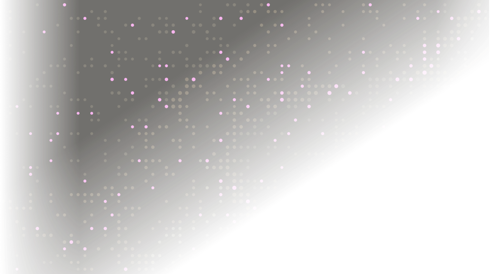

AI SRE MEETUP / SINGAPORE
Cheap Alerts,
Expensive
Investigations.
The economics of AI SRE
Time to restore.
And everything it took.
THE MISSING METRIC
A faster incident.
An unbounded bill.
WHAT THE DEMO SHOWS
Time to restore service.
WHAT PRODUCTION HAS TO PAY FOR
FOLLOW THE WORK
Put a meter on every stage.
An alert is the start of a pipeline, not a single prompt.
Filter
Rules, deduplication,
maintenance windows
Classify
Severity, service,
ownership
Group
Service dependencies
+ bounded candidates
Investigate
Query → read →
hypothesize → repeat
Remediate
Plan, execute,
verify recovery
UNIT ECONOMICS / A HEAVY INVESTIGATION
A short investigation.
A long bill.
Backend queries and operating costs
are accounted for separately.
NOW INVESTIGATE EVERY ALERT
1,000 alerts / day
× 30 days × $4.00
per month in investigation model usage.
Illustrative high-spend workload.
Additional costs are on the next slide.
ADDITIONAL COSTS / BEYOND INFERENCE
The model bill is only the start.
Backend pricing and operating overhead depend on your stack.
01 / QUERYING COSTS
CloudWatch Logs Insights example
around this incident.”
The backend scans the logs.
Only returned results become model input.
Execution & paid APIs
Tool runtime, workflow workers,
API requests, and network transfer.
Memory & learning
Embeddings, indexes, storage,
evaluation, and stale-memory cleanup.
Engineering & operations
Connectors, permissions, monitoring,
upgrades, and on-call ownership.
Human review & mistakes
Approvals, verification, rework,
and the impact of incorrect actions.
ADMISSION + CORRELATION / FEWER INDEPENDENT RUNS
Do fewer investigations
before making them cheaper.
INCOMING / DAY
1,000Repeated notifications.
Known noise. Real incidents.
by rules*
ELIGIBLE ALERTS
400Classify, then group by
service dependency.
4 → 1 group*
GROUP INVESTIGATIONS
100One shared investigation
per related alert group.
CANDIDATE GROUP / SHARED DB DEPENDENCY + SAME INCIDENT WINDOW
CONTROL 02 / CORRELATION
Grouping has to earn its keep.
“Use an LLM to reduce LLM spend” needs a break-even calculation.
COMPARE EVERY PAIR
79,800pairs from 400 alerts
BOUND CANDIDATES FIRST
400bounded model decisions
THE EVIDENCE BILL
A tool call has two meters.
On a scan-billed backend: pay to find the data, then pay the model to read it.
SCAN
100 GBof logs searched
READ
80k tokensreturned to the agent
CONTEXT / THE COMPOUNDING COST
The transcript becomes the workload.
Retained evidence is sent again as the agent takes more turns.
INPUT PER MODEL CALL / THOUSAND TOKENS
AT $5 / MILLION INPUT
$1.80before output tokens
Lose evidence → query again.
Restart → repeat the work.
RESULT SIZE / KEEP USEFUL EVIDENCE
Summaries save rereads.
They cost a first read.
PASS THE RAW RESULT
80k × 4 × $5 / million
SUMMARIZE ONCE, REUSE FOUR TIMES
Small model · $1 / $5 per million$0.090
Investigation model · $3 per million$0.040
RETRIEVAL / TOPOLOGY BEFORE TELEMETRY
Ask a narrower question.
Start with the affected service, its dependencies, and recent changes.
14:02
FIRST RETRIEVAL
MODEL CHOICE / FOUR DIFFERENT JOBS
Route the task,
not the whole incident.
| Work | Model profile | What drives spend | Quality gate |
|---|---|---|---|
| Reasoning & diagnosis | STRONGER Adaptive reasoning | Deep thinking + many turns | Evidence-backed hypotheses |
| Tool selection & arguments | FAST Tool-capable | Retries + malformed calls | Schema, scope, permissions |
| Classification & extraction | SMALL Constrained output | High call volume | Recall + unknown fallback |
| Evidence summarization | SMALL / MID Faithful compression | Large inputs + rereads | Facts, anomalies, source links |
All premium $0.75→ Routed $0.28
Includes $0.01 routing overhead
PER-SEVERITY BUDGETS / BOUNDED AUTONOMY
Spend according to the incident.
Compare cost per successful task, including retries and escalations.
| Severity | Tool calls | Logs scanned | Model + query spend | On exhaustion |
|---|---|---|---|---|
| P1 Critical | 40 | 2,000 GB | $25.00 | Page + request more budget |
| P2 Degraded | 20 | 800 GB | $10.00 | Hand off with evidence |
| P3 Low impact | 4 | 100 GB | $2.00 | Queue for review |
REMEDIATION / THE PRICE OF BEING WRONG
The cheapest wrong answer
is still expensive.
THE VISIBLE COST
$1.50Model usage
for an action attempt.
THE EXPECTED LOSS / ASSUMED EXAMPLE
expected loss per attempt
LEARNING / THE COST CURVE OVER TIME
The next investigation
should cost less.
Stop rediscovering.
Retain useful queries, topology,
failed hypotheses, and verified fixes.
Start with a tested path.
Fewer searches, smaller context,
less reasoning for repeat incidents.
The floor stays above zero.
Fresh evidence, verification, memory
upkeep, and novel failures still cost.
FOLLOW THE MONEY / AFTER FILTERING & GROUPING
The investigation loop owns this bill.
MODEL SPEND / DAY
ATTACH COST TO THE INCIDENT
Model usage, cache reads/writes,
tool calls, bytes scanned, retries.
Incident ID, severity, acceptance,
recovery verified, human minutes.
Median + p95 spend. Cost per
correct resolution. Missed incidents.
THE WORKED EXAMPLE / INTERACTIVE
Change the policy. Watch the bill.
MODEL USAGE SUBTOTAL / 30 DAYS
$120,2251,000 investigations / day
THE ORDER I WOULD TRY
Cut repeated work.
Keep the evidence.
AI SRE MEETUP / SINGAPORE
Thank you.
Make the next incident cheaper to understand.
Questions?